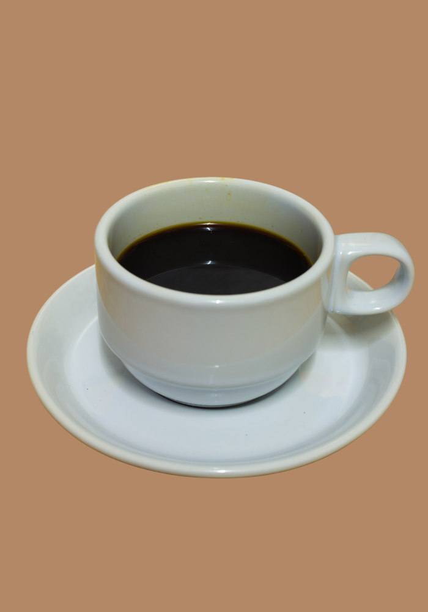
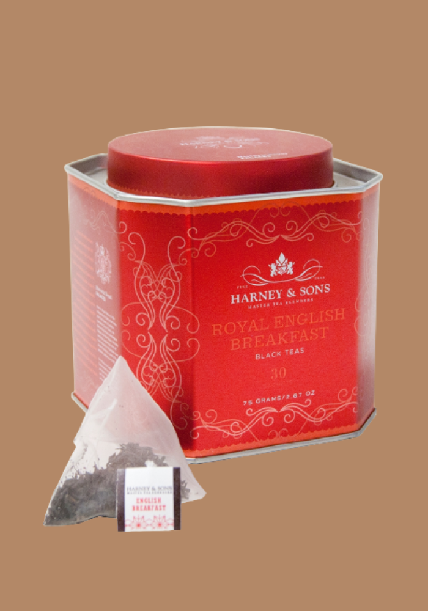

Menu
Hot Coffee
Americano |
Latte |
Cappuccino |
|---|
Cold Drinks
Iced Americano |
Macchiato |
Cold-Brew |
|---|
Frappuccino Blended Beverage
Mocha Cookie Crumble |
Caffè |
Caramel Ribbon Crunch |
|---|
Teas
|
Infusions Naturelles |
Royal Breakfast Tea |
|---|

Snacks
|
Croissant and Poitou-Charentes butter |
|
|---|
|
Sweet |
Chaussons Aux Pommes |
|---|

Macarons |
|---|